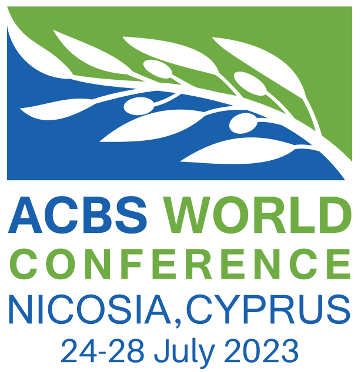
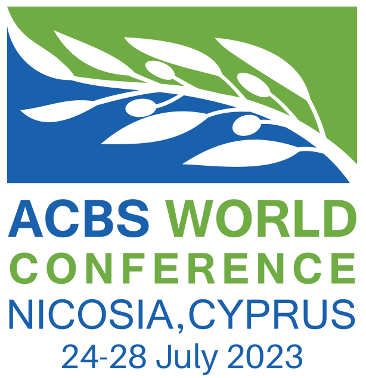

Preliminary evidence shows good psychometric properties for the Sleep Acceptance Scale, a new brief measure of Sleep Acceptance.
1 Department of Psychology, University of São Paulo, Brazil
Insomnia symptoms are associated with higher levels of metacognitive control. Controlled information processing interferes with a healthy sleep process by preventing cognitive deactivation, which involves diminished verbal regulation and control, and acceptance of spontaneous physiological and mental processes. Because general tools for measuring acceptance do not address sleep-related behaviors, the development of specific instruments is essential for studying acceptance of insomnia.
This study aimed to develop a new measure of sleep acceptance, titled Sleep Acceptance Scale (SAS), and examine its factorial structure, internal consistency, and construct validity.
The SAS was developed as a 6-item self-report questionnaire rated using a scale ranging from 1 (never) to 7 (always), such that high scores indicate lower sleep acceptance. Data were collected from online surveys responded by 1419 participants, aged 18 to 59 years, with and without insomnia symptoms. We conducted a parallel analysis and exploratory factor analysis (with oblimin rotation) and Confirmatory Factor Analysis to obtain fit statistics and parameter estimates, using the DWLS estimator.
The parallel analysis procedure indicated two latent factors: Avoidance (two items; \(\omega\) = .55) and Distress (four items; \(\omega\) = .93). The 2-factor model showed a good fit [\(\chi^2\)(8) = 59.48, RMSEA = .067 (0.05, 0.084); CFI = .999; RNI = .999; TLI = .998].
The SAS was positively correlated with ISI (r = .8), DBAS-16 (r = .76), AAQ-II (r = .63), HADS-A (r = .64), HADS-D (r = .56), and negatively correlated with SPAQ (r = -.63).
Preliminary evidence suggest that the SAS might be a reliable and valid indicator of acceptance of sleep problems in people with and without sleep problems.
| Item | 1 | 2 | 3 | 4 | 5 | Mean | SD |
|---|---|---|---|---|---|---|---|
| 1 | 3.59 | 1.86 | |||||
| 2 | 0.37 | 3.43 | 1.8 | ||||
| 3 | 0.34 | 0.44 | 3.7 | 2.16 | |||
| 4 | 0.34 | 0.46 | 0.86 | 3.86 | 2.19 | ||
| 5 | 0.35 | 0.54 | 0.72 | 0.76 | 3.6 | 1.97 | |
| 6 | 0.38 | 0.46 | 0.79 | 0.79 | 0.72 | 4.22 | 2.26 |
Figure 1: Structural equation model for the Confirmatory Factor Analysis for the final version of the Sleep Acceptance Scale. Avd = Avoidance, Dis = Distress.
I try to control my sleep by forcing it to happen or being too rigid about my sleep schedule.
I avoid making plans or doing things I enjoy or need to do because of my sleep.
The thought of going to sleep makes me uneasy.
I have negative feelings towards my sleep.
My worries, thoughts, and feelings about my sleep interfere with how I go about my daily life.
I am scared of not being able to fall asleep.
Preliminary evidence shows good psychometric properties for the Sleep Acceptance Scale, a new brief measure of Sleep Acceptance.
